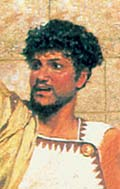

главная  персоналии
персоналии  Аристоник
Аристоник
главная |

Личность в историикраткая энциклопедияПроект «Личность в истории» посвящен людям — современникам грандиозных исторических событий, носителям редких качеств или людям, взгляды которых опередили их время. |
|||||||||||||||||||||||||||||
Коротко |
Статьи |
Персоналии |
Литература |
||||||||||||||||||||||||||
Аристоник |
|||||||||||||||||||||||||||||
|
«Аристоник мечтал построить «государство солнца», основанное на свободе и равенстве. Здесь, несомненно, сказалось влияние утопического романа Ямбула, рисовавшего «город солнца», где нет неравенства и эксплуатации, где все занимаются попеременно умственным и физическим трудом». Ранович А. Б. |  Фрагмент картины |
||||||||||||||||||||||||||||
Биографическая справкаАристоник (? — 129 г. до н. э.) побочный сын пергамского царя Аттала II, брат последнего пергамского царя Аттала III. Согласно завещанию, оставленному Атталом III, Пергамское царство после его смерти переходило «римскому народу». Не желая мириться с такой ситуацией, Аристоник в 133 г. до н. э., возглавил восстание против римского владычества. К восстанию присоединились широкие слои населения Пергамского царства. Он призывал к всеобщему равенству, освобождал рабов, которые активно вливались в ряды его сторонников, и в короткий срок создал крупную армию. Несмотря на то, что он объявил себя царем и принял тронное имя Эвмена III, Аристоник сохранял тесную связь с народом, особенно с низшими слоями населения. Его идеи социального равенства, желание создать Государство Солнца, где все граждане «гелеополиты» были бы наделены одинаковыми правами, его мысль о недопустимости рабства, были для того времени революционными и необычайно притягательными. Аристоник оказался талантливым полководцем. Вскоре после начала восстания он контролировал практически весь Пергам и даже разгромил в 131 г. до н. э. римскую армию во главе с консулом П. Лицинием Крассом. Однако в следующем году римский консул Марк Перперна совместно с союзными войсками нанес поражение войскам Аристоника, который вскоре был захвачен в плен и умер в римской тюрьме в 129 г. до н. э. Сторонники Аристоника продолжали вести борьбу с римскими восками на территории Пергама до последней возможности.
Цитаты«…у Эвмена был сын Аристоник, рожденный не в законном браке, а от наложницы, [родом] из Эфеса, дочери какого-то кифареда». (Юстин. Эпитома. XXXVI. Гл 4. 6.) «Когда Аристоник нанес раяд поражений городам, которые из страха перед римлянами не хотели перейти на его сторону, он, казалось, стал уже законным царем Азии». (Юстин. Эпитома. XXXVI. Гл. 4. 7.) «Между тем в Азии начал войну Аристоник, сын Эвмена, признанный [сыном] от наложницы. Эвмен был сыном Аттала. Посланный против него Публий Лициний Красс получил неограниченную помощь от царей. <…> Однако Красс был побежден и убит в сражении. Его голову доставили Аристонику, а тело погребли в Смирне». (Евтропий. Бревиарий от основания города. Кн. IV. 20. 1.) «…Перперна, римский консул, который прибыл на смену Крассу, поспешил в Азию, услышав о [превратностях] судьбы на этой войне, и победил Аристоника в сражении близ города Стратоникея, куда он бежал, и с помощью голода вынудил его сдаться. По постановлению сената Рима Аристоник был задушен в тюрьме. Но триумф над ним не состоялся, так как Перперна скончался у Пергама на обратном пути в Рим». (Евтропий. Бревиарий от основания города. Кн. IV. 20. 2.) Список литературы
|
|||||||||||||||||||||||||||||
|